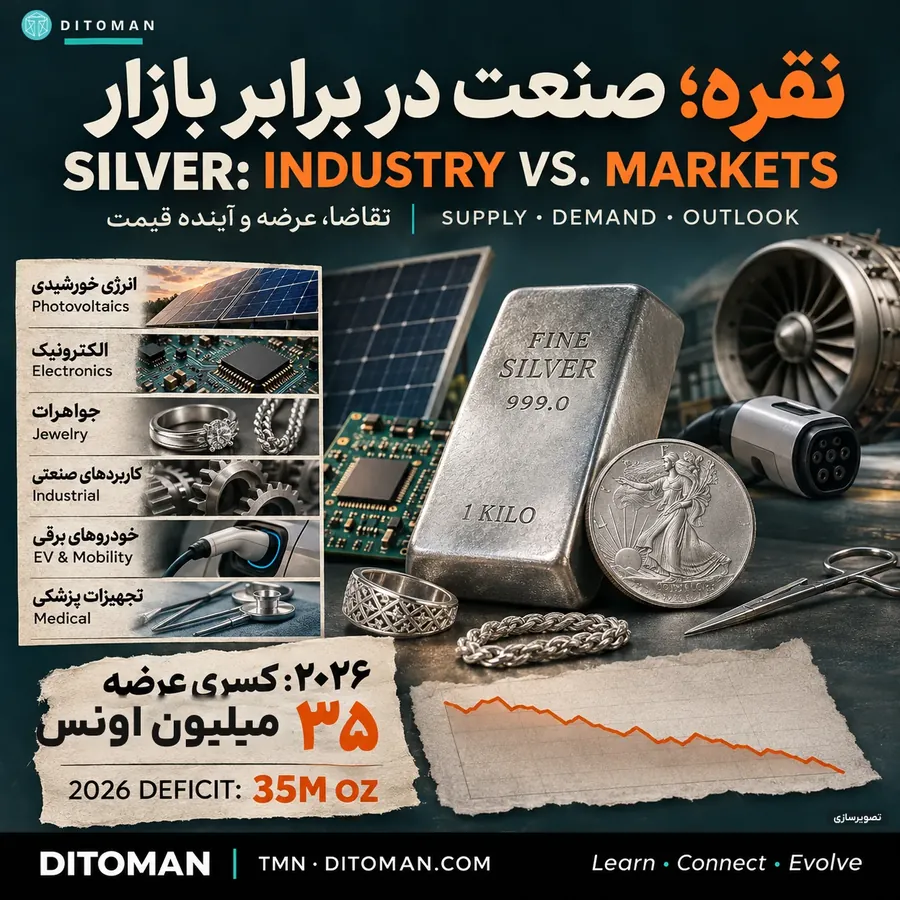
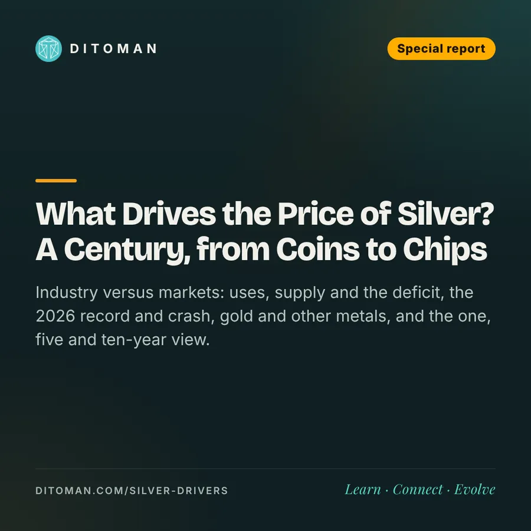
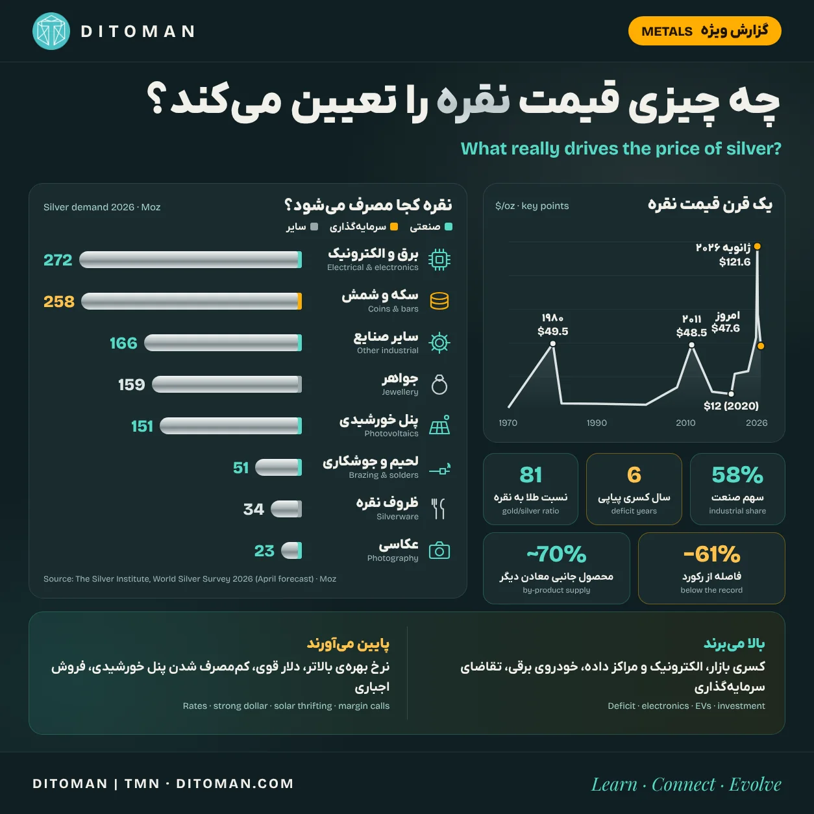

چه چیزی قیمت نقره را تعیین میکند؟ صد سال نقره، از سکه تا تراشه
What drives the price of silver? A century, from coins to chips
صنعت در برابر بازار: کاربردها، عرضه و کسری، دلیل رکورد و سقوط ۲۰۲۶، مقایسه با طلا و فلزات دیگر و نگاه یک، پنج و ده ساله.
Industry versus markets: uses, supply and the deficit, the 2026 record and crash, gold and other metals, and the one, five and ten-year view.
0. در یک نگاه
نقره تنها فلزی است که همزمان پول، جواهر و قطعهی صنعتی است. همین دو چهره، قیمتش را از طلا پرنوسانتر میکند: یک روز با کارخانههای پنل خورشیدی و تراشه بالا و پایین میرود و روز دیگر با فدرال رزرو و دلار.
| شاخص | رقم |
|---|---|
| قیمت امروز (۱۶ نوامبر ۲۰۲۶) | حدود ۴۷٫۶ دلار هر اونس |
| رکورد تاریخی | حدود ۱۲۱٫۶ دلار، اواخر ژانویهی ۲۰۲۶ |
| میانگین قیمت ۲۰۲۵ | حدود ۴۰ دلار |
| فاصله از رکورد | حدود ۶۱٪ پایینتر |
| سهم صنعت از تقاضا (پیشبینی ۲۰۲۶) | نزدیک ۵۸٪؛ در ۲۰۱۶ حدود ۴۹٪ |
| تقاضای صنعتی (پیشبینی ۲۰۲۶) | حدود ۶۴۰ میلیون اونس |
| کل تقاضا (برآورد ۲۰۲۶) | حدود ۱٫۰۸ میلیارد اونس، ۵٪ کمتر از ۲۰۲۵ |
| کل عرضه (برآورد ۲۰۲۶) | حدود ۱٫۰۴۵ میلیارد اونس |
| کسری بازار | ششمین سال پیاپی؛ حدود ۳۵ میلیون اونس در ۲۰۲۶ (۲۰۲۵: ۵۴ میلیون) |
| نسبت طلا به نقره | حدود ۸۱ (هر اونس طلا = ۸۱ اونس نقره) |
این گزارش آموزشی است و توصیه به خرید یا فروش نقره نیست.
1. صد سال نقره در یک جدول
| زمان | قیمت تقریبی هر اونس | چه اتفاقی افتاد |
|---|---|---|
| ۱۹۰۰ تا ۱۹۳۰ | کمتر از ۱ دلار | نقره هنوز فلز پول بود، اما بیشتر کشورها به استاندارد طلا رفته بودند |
| ۱۹۶۰ تا ۱۹۷۱ | حدود ۱٫۳ تا ۱٫۷ دلار | آمریکا ساخت سکهی نقره را در ۱۹۶۵ کنار گذاشت؛ نقره از پول جدا شد |
| ژانویهی ۱۹۸۰ | حدود ۴۹٫۵ دلار | تورم بالا و تلاش برادران هانت برای احتکار بازار؛ سپس سقوط حدود ۷۸٪ در دو ماه |
| دههی ۱۹۸۰ و ۱۹۹۰ | ۴ تا ۶ دلار | دو دهه رکود؛ اوج مصرف عکاسی |
| آوریل ۲۰۱۱ | حدود ۴۸٫۵ دلار | بحران مالی و سیاست پولی انبساطی؛ سپس افت حدود ۷۲٪ تا ۲۰۱۵ |
| مارس ۲۰۲۰ | حدود ۱۲ دلار | شوک کرونا؛ پایینترین سطح یک دهه |
| ۲۰۲۵ | از حدود ۲۹ به بیش از ۷۰ دلار | رشد حدود ۱۴۷٪؛ کسری بازار، تقاضای سرمایهگذاری و هند |
| اکتبر ۲۰۲۵ | عبور از ۵۰ دلار | شکسته شدن سقف ۴۵ سالهی ۱۹۸۰ |
| اواخر ژانویهی ۲۰۲۶ | حدود ۱۲۱٫۶ دلار | رکورد تاریخی |
| ۳۰ ژانویهی ۲۰۲۶ | حدود ۸۵ دلار | سقوط بیش از ۲۵٪ در یک روز؛ تندترین از ۱۹۸۰ |
| ۱۶ نوامبر ۲۰۲۶ | حدود ۴۷٫۶ دلار | دلار قوی، افزایش نرخ بهره و نگرانی از تقاضای صنعتی |
الگوی تکرارشونده: نقره در صد سال اخیر سه بار تا حدود ۵۰ دلار رفته و هر بار ۷۰ تا ۸۰ درصد سقوط کرده است. ۲۰۲۶ اولین بار بود که از این سقف بسیار بالاتر رفت.
2. نقره در گذشته: از پول تا فیلم عکاسی
- پول جهان: تا قرن نوزدهم، نقره ستون پول بسیاری از کشورها بود؛ از درهم و ریال تا دلار نقرهای. نسبت طلا به نقره در بیشتر این دوره حدود ۱۵ تا ۱۶ بود
- پایان نقش پولی: از دههی ۱۸۷۰ کشورها به استاندارد طلا رفتند و نقره کمکم از پول جدا شد. آمریکا آخرین سکههای نقرهای رایج را در ۱۹۶۴ ضرب کرد
- دوران عکاسی: در قرن بیستم، فیلم عکاسی و رادیولوژی بزرگترین مصرفکنندهی صنعتی نقره بود؛ حدود سال ۲۰۰۰ بیش از ۲۵۰ میلیون اونس در سال. با دوربین دیجیتال، این مصرف به حدود ۲۳ میلیون اونس رسیده است
- ظروف و جواهر: ظروف نقره، جهیزیه و قلمزنی؛ در ایران، اصفهان و زنجان قرنها مرکز هنر نقره بودهاند
صد سال تحول تقاضا، دوره به دوره:
| دوره | چهرهی اصلی تقاضا |
|---|---|
| ۱۹۲۰ تا ۱۹۵۰ | سکه، ظروف، جواهر و عکاسی؛ نقش پولی نقره هنوز پررنگ بود |
| ۱۹۵۰ تا ۱۹۸۰ | رشد عکاسی و فیلم، مواد شیمیایی، اتصالات و تجهیزات الکتریکی |
| ۱۹۸۰ تا ۲۰۰۰ | نوسان شدید سرمایهگذاری در کنار مصرف صنعتی؛ اوج نزدیک ۵۰ دلار در ۱۹۸۰ و سقوط پس از آن |
| ۲۰۰۰ تا ۲۰۱۵ | عکاسی دیجیتال مصرف سنتی را کم کرد؛ الکترونیک و انرژی خورشیدی کاربردهای تازه ساختند |
| ۲۰۱۵ تا ۲۰۲۵ | گسترش خورشیدی، شبکهی برق و خودروی برقی؛ نقش پررنگ صندوقها و سرمایهگذاران |
| ۲۰۲۶ به بعد | مراکز داده، تجهیزات برقی و فناوریهای نو، در برابر کاهش نقره در هر محصول |
3. نقره امروز: کجا مصرف میشود؟

پیشبینی ۲۰۲۶ مؤسسهی نقره در گزارش سالانهی آوریل، به نقل از ویژوال کپیتالیست:
| بخش | میلیون اونس | نوع تقاضا |
|---|---|---|
| برق و الکترونیک | ۲۷۲ | صنعتی |
| سکه و شمش | ۲۵۸ | سرمایهگذاری |
| سایر مصارف صنعتی | ۱۶۶ | صنعتی |
| جواهر | ۱۵۹ | سایر |
| پنل خورشیدی | ۱۵۱ | صنعتی |
| لحیم و آلیاژهای جوشکاری | ۵۱ | صنعتی |
| ظروف نقره | ۳۴ | سایر |
| عکاسی | ۲۳ | صنعتی |
تازهترین برآورد (۱۳ نوامبر ۲۰۲۶، مؤسسهی نقره و متالز فوکوس):
| بخش | برآورد ۲۰۲۶ | تغییر نسبت به ۲۰۲۵ |
|---|---|---|
| کل تقاضا | ۱٬۰۸۱ میلیون اونس | ۵٪ کاهش |
| تقاضای صنعتی | ۶۴۰ میلیون اونس | ۳٪ کاهش |
| صنعت بدون خورشیدی | ۴۹۲ میلیون اونس | ۴٫۵٪ رشد |
| جواهر | ۱۴۸ میلیون اونس | ۲۲٪ کاهش |
| ظروف نقره | ۳۵ میلیون اونس | ۱۷٪ کاهش |
| سکه و شمش | ۲۱۵ میلیون اونس | ۲٪ کاهش |
| صندوقهای قابل معامله | خروج خالص ۴۵ میلیون اونس | در ۲۰۲۵ ورود ۲۷۸ میلیون اونس |
یعنی صنعت غیرخورشیدی، از الکترونیک تا خودرو، هنوز رشد میکند؛ اما افت خورشیدی، جواهر و ظروف، کل تقاضا را پایین آورده است (pv magazine به نقل از متالز فوکوس).
چرا صنعت اینقدر نقره میخواهد؟ نقره بهترین رسانای برق و گرما در میان همهی فلزات است، بازتاب نور آن از همه بیشتر است و خاصیت ضدباکتری دارد. جایگزین کردنش آسان نیست؛ فقط میشود کمتر از آن استفاده کرد.
4. کاربردها، صنعت به صنعت
| صنعت | کاربرد نقره | روند |
|---|---|---|
| الکترونیک | کلیدها، اتصالات، تراشهها، برد مدار، گوشی و لپتاپ | پایدار؛ رشد با هوش مصنوعی و مراکز داده |
| انرژی خورشیدی | خمیر نقره روی سلولهای فتوولتائیک | پیشبینی افت ۱۹٪ در ۲۰۲۶ به دلیل «کممصرفسازی» و جایگزینی با مس |
| خودروی برقی | سیستمهای برقی، شارژ، باتری و حسگرها | خودروی برقی معمولاً بیشتر از خودروی بنزینی نقره دارد |
| پزشکی | پانسمان زخم، پوشش کاتتر و ابزار جراحی، به دلیل خاصیت ضدباکتری | کوچک اما با ارزش افزودهی بالا |
| هوافضا و دفاع | لحیم و اتصال در دمای بالا، پوشش یاتاقانها، اتصالات الکتریکی ماهواره و هواپیما | حساس به کیفیت، نه حجم |
| شیمی | کاتالیزور تولید مواد اولیهی پلاستیک و ضدیخ | پایدار |
| ساختمان | شیشههای کمگسیل (Low-E) و آینه | وابسته به ساختوساز |
| تصفیهی آب | فیلترهای ضدباکتری | رو به رشد |
| جواهر و ظروف | زینت، هدیه و پسانداز خانوار | حساس به قیمت؛ پیشبینی افت در ۲۰۲۶ |
| سرمایهگذاری | سکه، شمش و صندوقهای قابل معامله | بیشترین نوسان |
5. عرضه: نقره از کجا میآید؟
- معدن: حدود ۸۳۴ میلیون اونس در ۲۰۲۶ (برآورد نوامبر)؛ تقریباً ثابت. مکزیک بزرگترین تولیدکننده است (حدود ۲۲٪ تولید جهان) و پس از آن چین، پرو، شیلی، بولیوی، لهستان، روسیه و استرالیا
- نقرهی محصول جانبی: بیشتر نقرهی جهان، حدود ۷۰٪، محصول جانبی معادن مس، سرب، روی و طلاست. یعنی اگر قیمت نقره دو برابر شود، معدنها لزوماً بیشتر تولید نمیکنند؛ تولید به قیمت فلز اصلی بستگی دارد
- بازیافت: حدود ۲۱۰ میلیون اونس در ۲۰۲۶، ۶٪ بیشتر؛ بالاترین سطح از ۲۰۱۲. قیمت بالا، ظروف و جواهر قدیمی را به بازار برمیگرداند
- کل عرضه: حدود ۱٫۰۴۵ میلیارد اونس
- کسری: ششمین سال پیاپی که تقاضا از عرضه بیشتر است. برآورد مؤسسهی نقره برای ۲۰۲۶ از ۶۷ میلیون اونس در فوریه، به ۴۶ میلیون در آوریل و ۳۵ میلیون اونس در نوامبر کاهش یافته است. کسری ۲۰۲۵ حدود ۵۴ میلیون اونس بود و جمع کسریها از ۲۰۲۱ به حدود ۷۴۶ میلیون اونس میرسد (گزارش)
- کسری یعنی تمام شدن نقره؟
نه. موجودی شمشها، انبارهای لندن، نیویورک و شانگهای و فروش سرمایهگذاران، شکاف را پر میکند؛ اما هر سال کسری، این ذخایر را کمتر میکند
6. هفت عامل اصلی قیمت نقره
- ۱. نرخ بهره و فدرال رزرو: نقره سود نمیدهد. وقتی بهرهی واقعی بالا میرود، نگه داشتنش گرانتر میشود. فدرال رزرو در ۲۰۲۶ نرخ بهره را بالا برده است
- ۲. دلار: نقره به دلار قیمتگذاری میشود؛ دلار قوی معمولاً یعنی نقرهی ضعیف
- ۳. تقاضای صنعتی: خورشیدی، الکترونیک، خودروی برقی و مراکز داده؛ و رشد اقتصادی چین
- ۴. جریان سرمایهگذاری: صندوقهای قابل معامله، سکه و شمش؛ و موقعیت معاملهگران در بازار آتی
- ۵. بازار آتی و وجه تضمین: بخش بزرگی از قیمت در بازارهای آتی کشف میشود. وقتی بورس شیکاگو در ژانویه و فوریهی ۲۰۲۶ وجه تضمین قراردادهای نقره را از ۱۱٪ تا ۱۸٪ بالا برد، بسیاری مجبور به فروش شدند
- ۶. طلا: نقره معمولاً دنبال طلا میرود، اما با شدت بیشتر؛ در صعود تندتر بالا میرود و در نزول تندتر میافتد
- ۷. عرضهی معدن: چون بیشتر نقره محصول جانبی است، عرضه کند و دیر به قیمت واکنش نشان میدهد
7. چرا نقره بالا رفت و چرا افتاد؟
صعود (۲۰۲۵ تا ژانویهی ۲۰۲۶):
- پنج سال کسری پیاپی و کاهش ذخایر انبارها
- رکورد خرید در هند و رشد تقاضای سرمایهگذاری
- صعود طلا به بیش از ۵٬۰۰۰ دلار و نگرانیهای ژئوپلیتیک
- هیجان سفتهبازی؛ رشد حدود ۱۴۷٪ در یک سال
سقوط (از ۳۰ ژانویهی ۲۰۲۶ تا امروز):
- فروش اجباری: افزایش وجه تضمین در بورس شیکاگو؛ تحلیلگران مورنینگاستار علت سقوط ژانویه را خروج اجباری سفتهبازان دانستند، نه تغییر عرضه و تقاضا
- سیاست پولی: فدرال رزرو در سپتامبر ۲۰۲۶ نرخ بهره را به ۳٫۷۵ تا ۴٪ رساند و انتظار افزایش بیشتر وجود دارد؛ دلار قوی شد
- انرژی و تورم: جهش نفت در پی جنگ و اختلال هرمز، تورم را بالا برد و احتمال بهرهی بالاتر را تقویت کرد
- تقاضای صنعتی: کاهش مصرف نقره در پنل خورشیدی و تردید دربارهی سرمایهگذاری در مراکز دادهی هوش مصنوعی. طبق متالز فوکوس، سهم نقره از هزینهی ماژول خورشیدی TOPCon در قیمت ۶۰ دلار حدود ۱۷٪ است؛ برای همین سازندگان به سمت مس و نقرهی روکششده روی مس رفتهاند
- خروج از صندوقها: برآورد خروج خالص ۴۵ میلیون اونس از صندوقهای نقره در ۲۰۲۶، پس از ورود ۲۷۸ میلیون اونس در ۲۰۲۵
- بازده واقعی اوراق: بازده واقعی اوراق دهسالهی آمریکا از ۶ تا ۱۲ نوامبر از ۲٫۶۳٪ به ۲٫۸۶٪ رسید؛ نگه داشتن فلزی که سود نمیدهد، گرانتر شد
- قیمت بالا، تقاضای کمتر: جواهرسازان کمتر خریدند و بازیافت بیشتر شد
پارادوکس کسری: بازار در کسری است، اما قیمت افتاده؛ چون در کوتاهمدت بازار آتی و جریان پول، از کمبود فیزیکی مهمترند و ذخایر انبارها شکاف را پر میکنند.
8. نقره در کنار طلا و فلزات دیگر
| فلز | قیمت تقریبی (۹ نوامبر ۲۰۲۶) | ویژگی |
|---|---|---|
| طلا | حدود ۳٬۸۷۲ دلار هر اونس | پناهگاه امن و ذخیرهی بانکهای مرکزی |
| نقره | حدود ۴۷٫۵ دلار هر اونس | نیمهصنعتی، نیمهسرمایهای؛ پرنوسان |
| پلاتین | حدود ۱٬۴۶۸ دلار هر اونس | کاتالیزور خودرو و هیدروژن |
| پالادیوم | حدود ۹۸۲ دلار هر اونس | کاتالیزور خودروی بنزینی |
| مس | حدود ۵٫۹۶ دلار هر پوند | فلز برقرسانی جهان |
- نسبت طلا به نقره: امروز حدود ۸۱. میانگین قرن بیستم حدود ۵۰ بوده، در مارس ۲۰۲۰ به بیش از ۱۲۰ رسید و در اوج ژانویهی ۲۰۲۶ به حدود ۴۵ پایین آمد. نسبت بالا یعنی نقره نسبت به طلا ارزانتر شده است
- اندازهی بازار: ارزش تقاضای سالانهی نقره با قیمت امروز حدود ۵۰ تا ۵۵ میلیارد دلار است؛ دهها برابر کوچکتر از بازار طلا. همین کوچکی، دلیل نوسان شدید نقره است
ارزش نظری جریان سالانهی نقره (۱٫۰۸ میلیارد اونس) در قیمتهای فرضی:
| قیمت هر اونس | ارزش سالانهی تقاضا |
|---|---|
| ۴۰ دلار | حدود ۴۳ میلیارد دلار |
| ۵۰ دلار | حدود ۵۴ میلیارد دلار |
| ۶۰ دلار | حدود ۶۵ میلیارد دلار |
| ۸۰ دلار | حدود ۸۶ میلیارد دلار |
| ۱۰۰ دلار | حدود ۱۰۸ میلیارد دلار |
این ارقام ارزش جریان سالانه است، نه ارزش کل ذخایر نقرهی جهان
- بهترین سالها: ۱۹۷۹ (بیش از ۴۰۰٪ رشد)، ۲۰۱۰ (حدود ۸۰٪)، ۲۰۲۰ (حدود ۴۷٪) و ۲۰۲۵ (حدود ۱۴۷٪)
9. نگاه یکساله، پنجساله و دهساله
این بخش پیشبینی قیمت نیست؛ مرور دیدگاههای منتشرشده و عوامل عرضه و تقاضاست.
یک سال آینده (۲۰۲۷):
| نهاد | دیدگاه منتشرشده | زمان انتشار |
|---|---|---|
| HSBC | میانگین ۶۸ دلار در ۲۰۲۷ | مه ۲۰۲۶ |
| کومرتسبانک | ۹۵ دلار تا پایان ۲۰۲۷ | ۲۰۲۶ |
| TD Securities | حدود ۷۰ دلار تا پایان ۲۰۲۷ | میانهی ۲۰۲۶ |
| نظرسنجی LBMA | میانگین حدود ۸۰ دلار برای ۲۰۲۶؛ بازهی ۴۲ تا ۱۶۵ | ابتدای ۲۰۲۶ |
بیشتر این پیشبینیها وقتی منتشر شدهاند که قیمت بسیار بالاتر از امروز بود. فیلیپ نیومن از متالز فوکوس در نوامبر گفته کف حدود ۵۰ دلار «نسبتاً محکم» به نظر میرسد، اما نوسان ادامه دارد و افت به زیر ۵۰ دلار هم ممکن است؛ و انتظار دارد نصب پنل خورشیدی در ۲۰۲۷ دوباره رشد کند.
سه سناریو، بدون عدد هدف:
| سناریو | شرایط | |
|---|---|---|
| صعودی | دلار ضعیفتر، کاهش نرخ بهره، بازگشت سرمایه به صندوقها و مصرف صنعتی مقاوم | |
| میانه | رشد تدریجی و کوچک شدن کسری | |
| نزولی | نرخ بهرهی بالا، خروج سرمایه و جایگزینی سریع نقره با مس | عوامل کلیدی سال آینده: مسیر نرخ بهره، دلار، قیمت نفت و تقاضای چین. |
پنج سال آینده (تا ۲۰۳۱):
- فشار رو به پایین: کاهش مصرف نقره در هر پنل خورشیدی، جایگزینی با مس و رشد بازیافت
- فشار رو به بالا: برقی شدن خودروها، شبکههای برق، مراکز داده و الکترونیک؛ و عرضهی تقریباً ثابت معدن
- پرسش اصلی: آیا رشد مصارف تازه، کاهش مصرف خورشیدی را جبران میکند؟ مؤسسهی نقره و HSBC انتظار دارند کسری کوچکتر شود
ده سال آینده (تا ۲۰۳۶):
- کیفیت ذخایر معدنی پایین میآید و معدن تازه ۱۰ تا ۱۵ سال طول میکشد
- نقره در فناوریهای تازه، مانند باتریهای حالت جامد و الکترونیک پیشرفته، آزمایش میشود
- نقش سرمایهگذاری نقره بستگی دارد به اینکه جهان بیشتر به دنبال پناهگاه باشد یا رشد
10. نقره و ایران
- قیمت داخلی: قیمت نقره در ایران برابر است با قیمت جهانی × نرخ ارز؛ برای همین، حتی وقتی نقرهی جهانی میافتد، ممکن است قیمت ریالی به دلیل نرخ ارز بالا بماند
- سرمایهگذاری کوچک: نقره برای بسیاری از خانوادهها راهی برای پسانداز با مبلغ کم است؛ اما اختلاف قیمت خرید و فروش، اجرت و مالیات در نقره، نسبت به ارزشش بیشتر از طلاست
- صنایع دستی: قلمزنی اصفهان، ملیلهکاری زنجان و جواهر نقره، فرصتی برای صادرات و ارزش افزودهاند
- صنعت: نیاز صنایع برق، الکترونیک و انرژی خورشیدی ایران به نقره، با گسترش نیروگاههای خورشیدی بیشتر میشود
11. نگاه دیتومان
نقره دو قلب دارد: یکی در کارخانه میتپد و دیگری در بازار پول. در کوتاهمدت، بازار پول برنده است؛ در بلندمدت، کارخانه.
صد سال تاریخ نقره یک درس دارد: هر اوجی، سقوطی هم دارد؛ و هر سقوطی، پایان داستان نیست.
برای فهم نقره، به جای تیترها اینها را دنبال کنید: نرخ بهره، دلار، گزارشهای مؤسسهی نقره و مصرف صنعت خورشیدی و الکترونیک.
بیشتر بخوانید
منابع
- The Silver Institute: Global silver market outlook 2026 (10 Feb 2026)
- pv magazine / Now.Solar: Silver prices find $50 floor; Silver Institute and Metals Focus interim estimates (16 Nov 2026)
- Startup Fortune: Silver demand set to fall 5% in 2026
- FXEmpire: Silver’s 35 million ounce deficit faces a higher-yield headwind (13 Nov 2026)
- Visual Capitalist: The top drivers of silver demand (with Global X)
- Fortune: Current price of silver, 16 Nov 2026
- Silverinfo: Silver in 2026, from a $121 record to half that
- Money Metals: Why is silver going down (Sept 2026)
- Crux Investor: Mexico silver mine output
- Skillings: Metal prices, 9 Nov 2026
- Yahoo Finance: HSBC raises silver forecasts for 2026 and 2027
- GoldSilver: Silver price forecast 2026-2027, bull and bear case
آخرین بازبینی: ۲۶ آبان ۱۴۰۵. قیمتها تقریبیاند و ارقام ۲۰۲۶ برآوردند، نه آمار قطعی پایان سال. این گزارش آموزشی است و توصیه به خرید یا فروش نقره نیست.